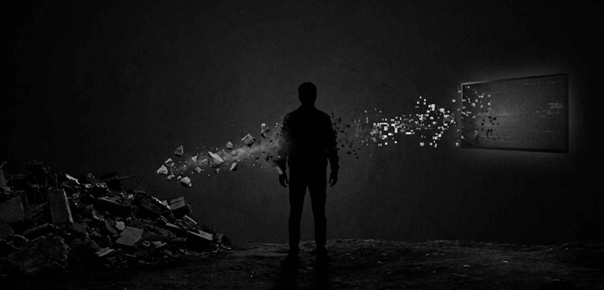
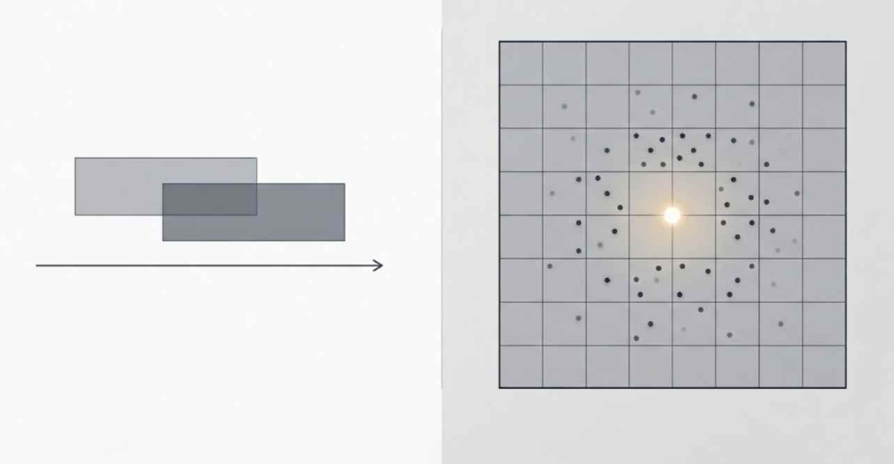
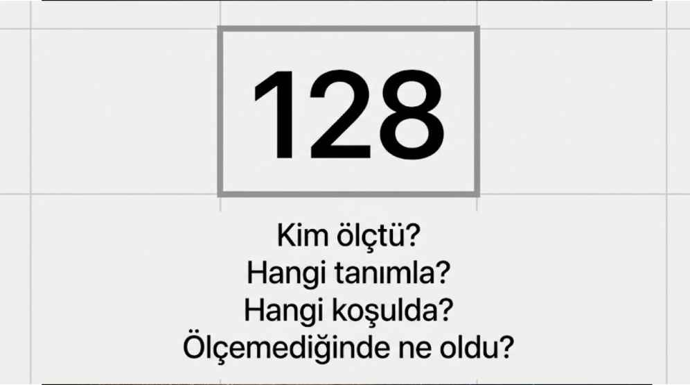
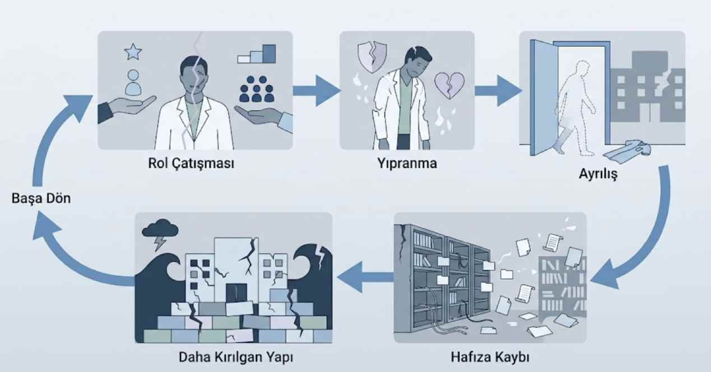

Bir Kişi Aynı Anda İki Yerde Olamaz
Afet yönetiminde görüş alanı, yorum ve sistem mimarisi üzerine

Emre Bostanoğlu
Veri Bilimci • Uzman İstatistikçi • Acil ve Afet Yönetimi
Özet
Afet planlarında sıkça geçen "veriyi zaten sahadaki ekip toplar" cümlesi masum görünür; oysa planın en pahalı satırıdır. Bu yazı; görüş alanı kısıtlarını, verinin yorumlanmasındaki dört tuzağı, payda problemini, yerel optimum tuzağını, veri borcunu ve afetten önce kurulması gereken veri mimarisini ele alarak, afet yönetiminde neden ayrı roller ve ayrı bakış açıları gerektiğini inceliyor.
Afet planlarının çoğunda sessiz bir varsayım vardır.
Yazılmaz. Tartışılmaz. Ama her satırın altında durur:
"Veriyi zaten sahadaki ekip toplar."
Bu cümle masumdur. Ve bu cümle, planın en pahalı satırıdır.
Çünkü veri toplamak bir angarya değildir. Bir tasarım işidir. Ve tasarlanmadan başlayan hiçbir veri akışı, sonradan düzeltilemez.

I. İki Kısıt
Zaman kısıtı. Bir kişi aynı anda hem hasta başında hem ekran başında olamaz. Kritik saatlerde harcanan her dakika, iki işten birinden alınmıştır.
Konum kısıtı. Bir kişi aynı anda hem bir noktada hem sistemin tamamında olamaz. Enkaz başındaki gözlemci kırk noktadan birini görür. Diğer otuz dokuzu görmez.
Zaman Kısıtı
Bir kişi aynı anda hem hasta başında hem ekran başında olamaz. Kritik saatlerde harcanan her dakika, iki işten birinden alınmıştır.
Konum Kısıtı
Bir kişi aynı anda hem bir noktada hem sistemin tamamında olamaz. Enkaz başındaki gözlemci kırk noktadan birini görür. Diğer otuz dokuzu görmez.
Aynı kişiyi merkeze oturtun, bütünü görür. Ama o zaman da sahada olmaz.
"Kısıt kişide değil. Kısıt uzayda ve zamanda."
Bu yüzden afet yönetimi bir gayret sorunu değildir. Bir gözlem birimi sorunudur. Kimin neyi görebildiği, kimin ne kadar çabaladığından önce gelir.

"Görüş alanı, gayretten önce gelir."
II. Verinin Söyleyemedikleri
Veri konuşmaz. Yorumlanır.
Ve yorumun ilk kuralı şudur:
"Bir sayıya bakmadan önce, o sayının nasıl var olduğuna bakılır."
Her veri noktasının arkasında bir üretim süreci vardır. Kim ölçtü. Hangi koşulda ölçtü. Hangi tanımı kullandı. Ölçemediğinde ne yaptı.
Bu sorular sorulmadığında, veri bir bilgi kaynağı olmaktan çıkar. Kendinden emin bir yanılsamaya dönüşür.
Kriz koşullarında dört tuzak birden devreye girer:
Ölçüm Güvenirliği
Aynı kavram farklı noktalarda farklı tanımlanır. Bir yerde "ağır yaralı" olan, başka bir yerde "orta" kaydedilir. Toplandığında ortaya çıkan sayı, hiçbir yerde karşılığı olmayan bir sayıdır. Ölçüm biliminde buna gözlemciler arası güvenirlik (inter-rater reliability) sorunu denir.
Bilgilendirici Eksiklik
Eksik veri her zaman rastgele değildir (istatistikte rastgele olmayan kayıp veri — MNAR). Bazen eksikliğin kendisi bilgidir. Bir bölgeden kayıt gelmiyorsa, bu "sorun yok" demek olabileceği gibi "kayıt tutacak kimse kalmadı" da demek olabilir. İstatistiksel olarak bu iki durum aynı boşluk gibi görünür. Operasyonel olarak birbirinin tam zıddıdır.
Ekolojik Yanılgı
Bölge düzeyindeki bir ortalama, o bölgedeki bireyler hakkında konuşmaz (istatistikte ecological fallacy). "İlçe kapasitesi yeterli" cümlesi, o ilçedeki üç mahallenin çökmediği anlamına gelmez.
Toplulaştırma Paradoksu
Alt gruplarda görülen eğilim, veriler birleştirildiğinde tersine dönebilir — istatistikte Simpson Paradoksu olarak bilinen bu durumda, sebep genellikle alt grupların büyüklüğündeki farktır (bir karıştırıcı değişken). Toplam tabloya bakan yönetici, her alt bölgede yanlış olan bir kararı doğru sanarak verebilir.
Bu tuzakların ortak özelliği şudur: hiçbiri veriye bakınca görünmez. Verinin nasıl doğduğunu bilerek bakınca görünür.
Analitik bakış açısının işlevi burada başlar. Sayıyı hesaplamak değil — sayının neyi temsil ettiğini, neyi temsil edemeyeceğini ayırt etmek.
Kritik Ayrım
"Yanlış tanımlanmış bir büyüklük, kusursuz bir yöntemle hesaplanabilir. Hesap doğrudur. Sonuç yanlıştır."

III. Payda Problemi
Bu, alanın en az konuşulan ve en tehlikeli sorunudur.
Sahadan gelen veri payı gösterir: kayda giren vakaları, ulaşılabilen yaralıları, sayılabilen herkesi.
Paydayı göstermez.
Risk altındaki nüfusu göstermez. Yolda kaybedilenleri göstermez. Hiç ulaşılamayanları göstermez.
Ve buradan şu çıkar:
"En çok kaybın yaşandığı bölge, veride en sakin bölge gibi görünür."
Vaka gelmiyorsa iki ihtimal vardır. Ya orada kimse yaralanmamıştır. Ya da oradan kimse çıkamamıştır.
Yalnızca paya bakan bir sistem bu ikisini ayırt edemez. Kaynağı sesi en çok çıkan yere gönderir. Sessizliğin ne anlama geldiğini sormaz.
Bu bir seçilim yanlılığıdır (selection bias). Barışta bir yöntem hatasıdır. Afette bir sonuç hatasıdır.
Paydayı görmek sahada mümkün değildir. Nüfus verisine, yapı stoğuna, coğrafyaya, kırılgan grup dağılımına aynı anda bakmayı gerektirir. Yani afetten önce hazırlanmış bir referans çerçevesi gerektirir.
IV. Herkesin Haklı Olduğu An
Bir kriz düşünün. Hiç kimse hata yapmıyor.
Her merkez kendi kapasitesini korumak için kabulü kısıyor. Tek tek bakıldığında hepsi doğru karar. Kendi hastasına karşı görev.
Otuz merkez aynı anda bunu yaptığında sistem kilitlenir.
Kimse yanlış yapmamıştır. Sonuç yine de felakettir.
Yerel Optimum Tuzağı
Her düğüm kendi çıkarını en iyileyen bir kural izler; toplamda ağ çöker. Açgözlü bir algoritmanın küresel en iyiyi ıskalaması gibi — oyun teorisinde Nash dengesizliği, ağ kapasitesi bağlamında ise Braess Paradoksu olarak bilinen fenomenin bir örneği. Bunu görebilecek tek konum, hiçbir düğümün içinde olmayan konumdur.
Sistemi kurtaran karar, hiçbir birimin kendi başına veremeyeceği karardır.
Ve dikkat edilmesi gereken şudur: burada her birim verimlidir. Verimsiz tek bir hareket yoktur. Etkisiz olan yalnızca bütündür.
"Otuz doğru karar, bir yanlış sonuç."
V. Çakışan Saatler
Klinik karar "şimdi"ye kilitlidir. Kilitli olması gerekir.
Sistem kararı ise tam olarak sonrası içindir. Hangi düğüm on ikinci saatte doyuma ulaşır? Hangi koridor kapanırsa hangi güzergâh devre dışı kalır?
Biri anı yönetir. Diğeri gecikmeyi.
"Aynı kafada, aynı anda, iki zaman ufku çalışmaz."
VI. Veri Borcu
Kriz biter. Veri bitmez.
Aceleyle, eksik ve tutarsız toplanan kayıt bir yere gitmez. Arşive girer.
Sonra o arşiv bir sonraki planlamanın dayanağı olur. Bir modelin eğitim kümesi olur. Bir kapasite kararının gerekçesi olur. Bir tezin kaynağı olur.
Birkaç günlük bir kayıt kaosu, yıllarca sürecek bir çıkarım hatasına dönüşür.
Veri Borcu
"Bugün ödenmeyen özen, yarın faiziyle geri gelir. Ve en kötüsü: borcun ne zaman alındığını kimse hatırlamaz."
Hatalı veriyle kurulmuş bir model, hatalı olduğunu söylemez. Yalnızca kendinden emin biçimde yanlış cevap verir.
VII. Mimari, Afetten Önce Kurulur
Buraya kadar anlatılan sorunların ortak kaynağı tektir.
Hiçbiri kriz anında ortaya çıkmaz. Hepsi kriz anında görünür hale gelir.
Doğdukları yer tasarım masasıdır.
Afet anında bir veri modeli tasarlanamaz. Bir ortak tanım kümesi üzerinde uzlaşılamaz. İki sistem arasındaki uyumsuzluk çözülemez. Bunların hepsi sakin zamanın işidir.
İyi bir afet veri mimarisinin taşıması gereken birkaç nitelik vardır:
Asgari Veri Seti
Kriz anında toplanacak alan sayısı, toplanabilecek en az sayıya indirilir. Her fazladan alan, sahada bir gecikmedir. Neyin toplanmayacağına karar vermek, neyin toplanacağına karar vermekten zordur.
Ortak Tanım
Aynı kavramın her noktada aynı şeyi ifade etmesi, kriz anında müzakere edilemez. Önceden sabitlenir.
Birlikte Çalışabilirlik
Sistemler birbirini konuşamıyorsa, her biri kendi doğrusunu üretir. Ortada tek bir durum resmi kalmaz; birbiriyle çelişen birkaç resim olur.
Zarif Bozulma
İyi mimari, parçaları koptuğunda çökmez; küçülerek çalışmaya devam eder. Bağlantı kesildiğinde çevrimdışı kayıt alabilmeli, bağlantı geldiğinde çakışmadan birleşebilmelidir.
Kaynağa Yakınlık
Veri, olayın gerçekleştiği yerde ve anda kaydedilmelidir. Sonradan hatırlanarak doldurulan her alan, ölçüm değil tahmindir.
İzlenebilirlik
Her kaydın kim tarafından, ne zaman, hangi koşulda üretildiği görülebilmelidir. Yorumun mümkün olması için önce kökenin bilinmesi gerekir.
Data Mesh: Dağıtık Sahiplik, Ortak Dil
Bu altı nitelik, aslında tek bir mimari paradigmanın parçalarıdır: Data Mesh (Veri Ağı). Klasik yaklaşım veriyi merkezi bir ambara toplar — tek ekip, tek darboğaz. Data Mesh bunun tersini önerir: her alan (her hastane, her bölge, her birim) kendi verisinin sahibidir ve onu bir ürün gibi sunar. Merkez veri toplamaz; ortak tanımı ve arayüz standardını belirler.
Bu, IV. bölümdeki yerel optimum tuzağının mimari cevabıdır. Otuz hastane kendi kararını verir — ama ortak tanım, ortak arayüz ve federatif yönetişim sayesinde otuz ayrı karar, tek bir tutarlı resme dönüşür. Gücü merkezileşmede değil, özerklik ile uyumun aynı anda var olabilmesindedir.
Bu maddelerin hiçbiri teknoloji seçimiyle ilgili değildir. Hepsi karar mimarisiyle ilgilidir.
Ve mimari, binanın içine girildikten sonra değiştirilemez.
"Mimari hızı artıran katman değildir. Yönü mümkün kılan katmandır."
"Tek yönlü."
VIII. Ölçülemeyen Maliyet
Buraya kadar olanlar hesaplanabilir.
Bundan sonrası hesaplanamaz.
Klinik etik, hekimi karşısındaki hastaya azami özeni göstermekle yükümlü kılar. Bu, mesleğin çekirdeğidir.
Afet triyajı bunun tersini ister. Bir hastadan vazgeçip kaynağı otuzuna aktarmayı ister.
İki mantık aynı kişide çakıştığında ortaya çıkan şey yorgunluk değildir. Yorgunluk uykuyla geçer.
Ortaya çıkan şey, kişinin kendi değerleriyle çelişen bir eylemi yapmak zorunda kalmasının bıraktığı izdir. Alan yazında ahlaki yaralanma olarak tanımlanır. Tükenmişlikten daha derin, daha kalıcı, daha sessizdir.
Döngü şöyle kapanır: rol çatışması yıpratır. Yıpranma ayrılığı getirir. Ayrılık kurumsal hafızayı götürür. Hafızası eksilen bir yapı, bir sonraki olayda daha kırılgandır.

Her afet, kendinden sonrakini hazırlar.
IX. Rolün Netliği
Hatalı bir veriye dayanan karar sonuçlandığında, sorumluluk kararı imzalayanda kalır.
Oysa arıza kararda değildir. Arıza, o kararın dayandığı verinin nasıl doğduğundadır. Yani mimaridedir.
Rol tanımı yapılmamış bir sistemde herkes her işten sorumludur.
"Herkesin sorumlu olduğu yerde ise kimse sorumlu değildir."
Bu bir hiyerarşi meselesi değildir. Bir tasarım meselesidir.
Bu dört sorunun cevabı afetten önce yazılmamışsa, afet anında yazılmaz. Doğaçlanır.
Ve doğaçlanan her rol, kriz bittikten sonra kalıcı hale gelir. Geçici çözüm, sessizce kurumsal standarda dönüşür.
X. Verimlilik ve Etkinlik
Kamu kaynağının kullanımında üç ölçüt birlikte anılır: ekonomiklik, verimlilik, etkinlik — denetim literatüründe 3E çerçevesi (Economy, Efficiency, Effectiveness).
İlk ikisi ölçülmesi kolay olandır. Ne kadar kaynakla ne kadar iş çıktı.
Üçüncüsü asıl sorudur: çıkan iş amaca hizmet etti mi?
Verimlilik, işi doğru yapmaktır. Etkinlik, doğru işi yapmaktır.
Aradaki fark kriz koşullarında keskinleşir. Çünkü kriz, verimliliği ödüllendiren bir ortamdır. Hızlı hareket eden görünür. Çok kayıt tutan görünür. Çok sevk yapan görünür.
Etkinlik görünmez. Çünkü etkinliğin ölçüsü yapılanlar değil, yapılmayanların bedelidir.
Ve burada yazının başındaki iki kavrama geri dönülür:
"Verimlilik payla ölçülür. Etkinlik paydayla."
Kaç vakaya ne kadar sürede ulaşıldığı verimliliktir. Ulaşılması gerekenlerin ne kadarına ulaşıldığı etkinliktir.
Birincisi sahadan görülür. İkincisi yalnızca bütüne bakan bir yerden.
Bir yapı kendi verimliliğini kendi ölçebilir. Kendi etkinliğini ölçemez.
"Aynı sistem, iki farklı soru."
Son Söz
Afet yönetiminde en tehlikeli durum yavaşlık değildir.
Hızlı çalışan ve yanlış yöne koşan bir sistemdir.
Verimlilik hızı artırır. Etkinlik yönü belirler. Yönü olmayan hız, yanlışa daha erken varmaktan başka bir şey değildir.
Bölünen dikkat verimliliği düşürür. Ama asıl kayıp orada değildir. Asıl kayıp, hız artarken yöne bakan kimsenin kalmamasıdır.
Rolleri ayırmak, ikisini aynı anda mümkün kılan tek düzenlemedir. Sahadaki el hızlanır. Bütüne bakan yer yönü tutar.
Ve bu ayrımın tek bir ölçüsü vardır:
Bir hayat daha.